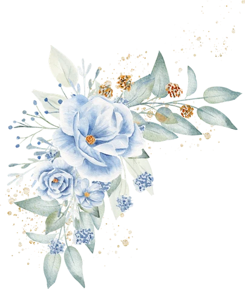

Non vediamo l’ora di festeggiare insieme a voi!
Scopri la giornataCapitolo I
Capitolo II
Per poter organizzare al meglio i festeggiamenti vi chiediamo di confermare la vostra presenza entro il 17 febbraio 2027, indicando anche eventuali allergie o intolleranze alimentari, sia degli adulti che dei bambini.
Per chi desiderasse fermarsi a dormire, Borgo degli Aranci mette a disposizione alcune camere, prenotabili a pagamento con costo a carico degli ospiti. Comunicateci anche l’eventuale interesse per il pernottamento, così da organizzare al meglio la disponibilità con la struttura.
Conferma a Emanuele Conferma a VanessaCapitolo III
Il regalo più bello sarà avervi accanto nel nostro giorno speciale. Se vorrete farci un dono, potrete contribuire a realizzare un altro dei nostri sogni: partire alla scoperta della Thailandia. Per chi desiderasse contribuire, ecco i nostri riferimenti:
Intestatario: Vanessa Vichi
IT02C0885172320000000211049 Causale: regalo di nozze Emanuele e Vanessa
Abbiamo pensato di condividere con voi qualche tappa del nostro itinerario, per portarvi un po’ con noi in questa avventura!
Da Bangkok, tra templi e mercati colorati, ci sposteremo nel nord della Thailandia, tra piantagioni di tè ed elefanti, per concludere il viaggio con un po’ di meritato relax sulle spiagge di Phuket.
Tocca i numeri sulla mappa per sfogliare le foto delle tappe.
Capitolo IV
Vi aspettiamo in chiesa alle 9:45, così da poter iniziare la cerimonia alle 10:00 in perfetto orario. Non vorrete perdervi nemmeno un istante del nostro sì!
Il regalo più bello che possiate farci è vivere questo momento insieme a noi. Vi chiediamo gentilmente di lasciare telefoni e fotocamere in tasca, assicurandovi che i telefoni siano in modalità silenziosa: i nostri fotografi sapranno catturare ogni emozione.
Per raggiungere la location bisogna affrontare un ultimo tratto in salita, con l’asfalto non proprio perfetto. Niente di preoccupante, ma procedete con un po’ di attenzione!
Ridete, ballate, brindate e divertitevi con noi!
Per qualsiasi dubbio prima del matrimonio non esitate a contattarci